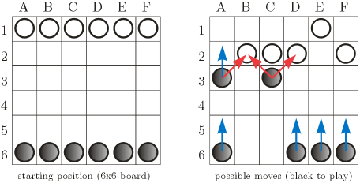

|
|||||||||||||||||
|
Server time: 2006-01-10 05:49:45 |
SPOJ Problem Set219. Pawns Gone WildProblem code: PAWNS
Imagine a game played on an n x n chessboard by two players sitting at opposite ends, one having n white pawns, the other - n black pawns. Pawns are arranged in the row closest to the player. Moves are made in turn by both players and resemble those in chess: in a single move, a player can move exactly one pawn, either a square forward (if the square it is moving onto is free), or on the bias, one square forward and one square to the left or right (if the square it is moving onto is occupied by an enemy's pawn, which is considered beaten and removed from the game). Pawns may never be moved backwards or off the board, and if a pawn reaches the final line it just has to stay there. The game ends if a player can't make a move. The winner is then the player who... oh, it doesn't matter really (possibly the players have a fight with beer bottles, and the one who isn't knocked out, wins). Your task is different - seeing snapshots of a game at two moments of time, try to reenact a sequence of moves that may have led from the first situation to the second. InputThe first line of input contains a single positive integer t<=25, the number of test cases. t test cases (of successively increasing size) follow. Each test case begins with an integer n (2<=n<=26) denoting the size of the board. Then, the snapshot of the earlier situation is given, followed by a snapshot of the later situation. Each snapshot is a sequence of n lines of n characters, corresponding to the squares of a chessboard oriented as in the figure above. Character '.' - denotes an empty square, 'W' - a square with a white pawn, 'B' - a square with a black pawn. Assume that it is black's turn to move after the earlier position (though black needn't have necessarily started the game as such). OutputFor each test case, output the number k of moves which could have led from the first to the second position (output 0 if you don't know a solution, even though such a solution exists for certain). In the next k lines, print the determined sequence of moves. Each move should be given in a seperate line, using the format: old_column old_row new_column to describe the change of coordinates of a pawn (assume board orientation as in the exemplary figures). ScoringThe score of your program is the total of scores awarded for individual test cases. For each test case for which you find a solution in k moves you will receive k points. ExampleFor the sample input: 1 6 ....W. .WWW.W B.B... ...... ...... B..BBB ...... .BWW.. .....W ...... .....B B..BB. a program outputting: 5 A 3 B F 2 F C 3 D E 1 D F 6 F will receive 5 points.
|
||||||||||||||||
| |||||||||||||||||